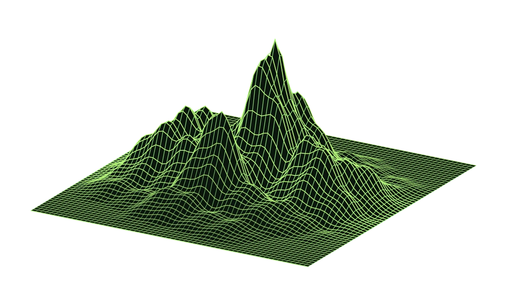
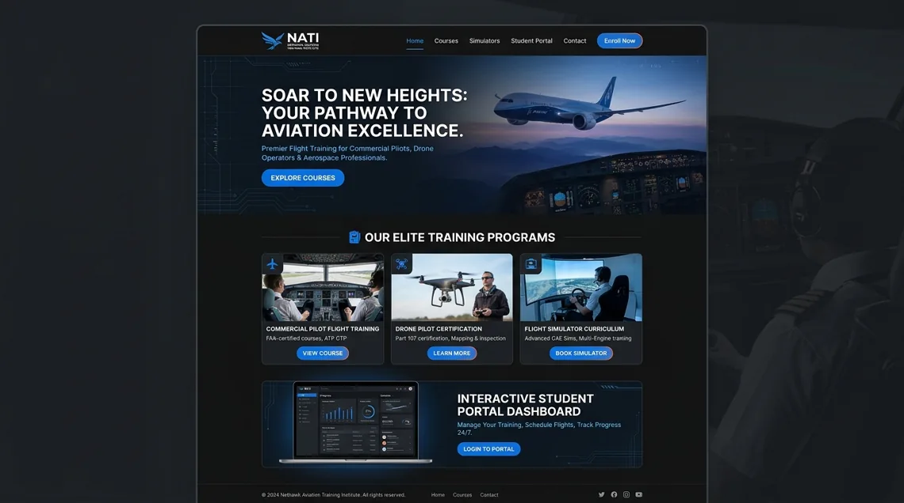

WorldSeed 3D
A planet you can sculpt in the browser.
I’m Nsikan-Abasi Essiet. I build web platforms, real-time systems and interactive 3D experiences from Kaduna, Nigeria.

A planet you can sculpt in the browser.

A live dispatch workspace for electric fleets.

One platform for Northern Nigeria’s innovation programmes.

A searchable directory of Kaduna businesses.

Digital admissions for an aviation training institute.

Publishing infrastructure and connected retail operations.
I’m a full-stack developer based in Kaduna. My work ranges from helping a dispatcher follow an electric fleet to putting a sculptable planet in someone’s browser.
I like working on both sides of the screen. What a visitor sees depends on decisions about data, rendering and how the system behaves when the connection slows down.
“He doesn’t just work through requirements, but also checks them for reasonableness.”
Engr. Okojere John · Digi02
“He is thorough, reliable, and possesses a rare combination of frontend finesse and backend rigor.”
Engr. Elijah Danjuma · Leap Solutions
“Nsikan transformed our publishing and systems infrastructure.”
Editorial Director · Winepress Media